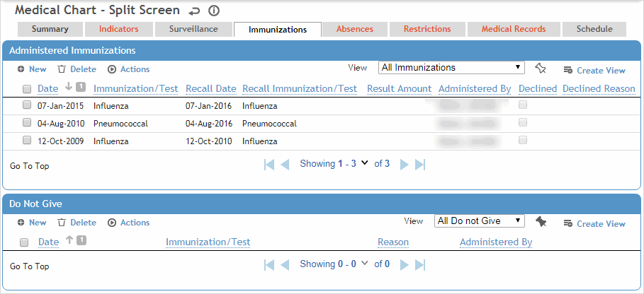

The Immunizations tab shows the immunization history, a list of immunizations that are not to be given to the employee, and the immunization plan for future vaccinations for the employee.
Only the “All Immunizations” view includes declined immunizations.

The top section lists the last record for each type or series of immunization; for example, if a booster has been given, only the booster will appear (not the original immunization). To view a particular immunization record click the date link, or click New to link to the Immunization module. For more information, see Entering an Immunization Record.
The bottom section shows all immunizations that should not be given to the employee. This includes:
“Universal” contraindications as defined in the ClinicVisitContraindications look-up table if relevant to the employee’s current immunization records. These contraindications are listed without a link.
Immunizations that the employee has refused, as shown on Rx tab.
These contraindications are listed with a link to view/edit the record. To add a new item click New. For more information, see Recording Medications (non-eRx).
To view immunization recalls that are in the future, as well as any Schedule Activity recalls that are linked to the Immunization module and that are due or overdue for this employee, choose Actions»Immunization Plan. For more information, see Viewing an Immunization Plan.